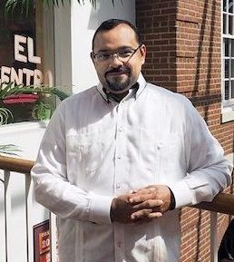

COMM_2034: Visual Media
Instructor: Carlos Evia
Awards and Honors:
Frank R. Smith Award for Distinguished Article in the Journal Technical Communication. May 2017.
Selected Publications:
Books:“Creating Intelligent Content with Lightweight DITA.” New York, NY: Routledge/Taylor & Francis, Publication date: December 17, 2018.
Sponsored Research:
“Science and Engineering Short Course for Technical Writing.” Space and Naval Warfare Systems Command. Amount awarded: $53,079. 2015.
Course Introduction:
The purpose of this course is to introduce student to the concepts and skills needed to succeed as producers of media, journalism, public relations, and other communication artifacts. To achieve this goal, students will frequently produce visual and written assignments in this course. In addition, students are expected to become critical consumers of media so that their own media production will be creative, accurate, ethical, and understandable.
My opinion:
This is a fascinating class with different class projects. The various media assignments we have done give me the chance to learn new skills. The group projects in this course also help me to further practice my communication skills and prepare me better for the future career path.